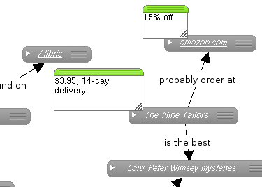

- General Knowledge
- Things to Remember
- Technical Procedures
- Driving Directions
- Todo Lists
- Project Planning

Image Caption... This could be sort of long I imagine...
Things to Remember
We all have those lists of things that we're "meaning to get back to." Terms to look up, facts to verify, websites we want to check out, movies we want to watch someday. Track these in Notewise, and connect them to the concepts that you naturally associate them with: similar movies, opposing points of view, the colleague who stated the fact or the friend who recommended the book. Though not urgent, these lists are nevertheless important to who you are, so capture them in Notewise and rest assured that they're safe.
Continue Tour >> Try It Out!